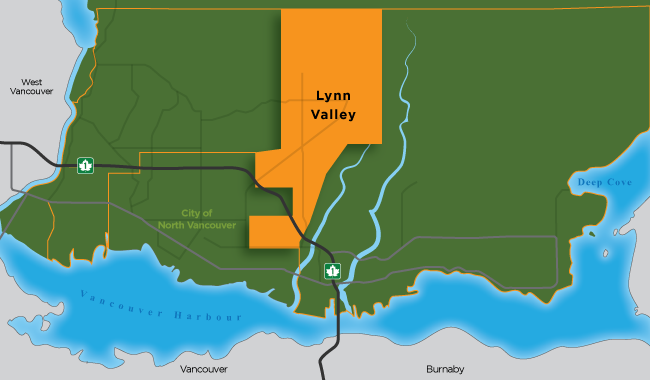

North Vancouver
North Vancouver
North Vancouver
North Vancouver

Home to some of our most visited recreational areas and celebrated for its mountain village charm, Lynn Valley is one of the District’s longest-established neighbourhoods.
Bounded by Upper Lonsdale to the west, Lower Lynn to the south, Lynn Creek to the east, and the rugged wilderness of the North Shore mountains to the north, Lynn Valley embraces nature at every turn.
This community includes the neighbourhoods of Upper Lynn, Upper West Lynn, Lower West Lynn, Valley Centre, Central Lynn, Lynn Canyon, West Lynn Terrace, Boundary, and Kirkstone. Lynn Valley is one of the District’s new town centres and the community’s central hub is undergoing a major transformation into a vibrant residential and commercial core for the area.